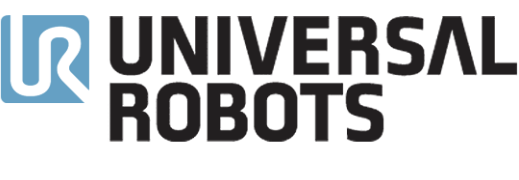
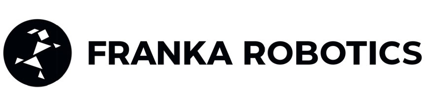
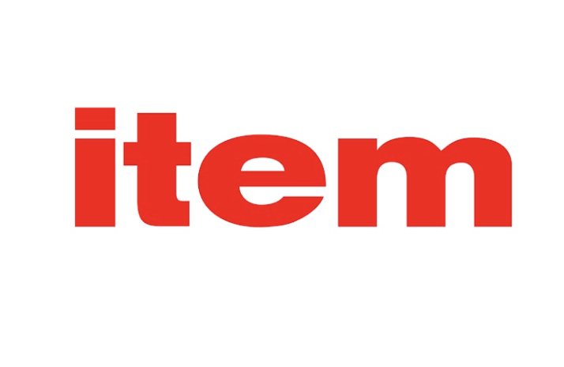
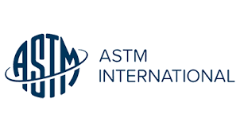
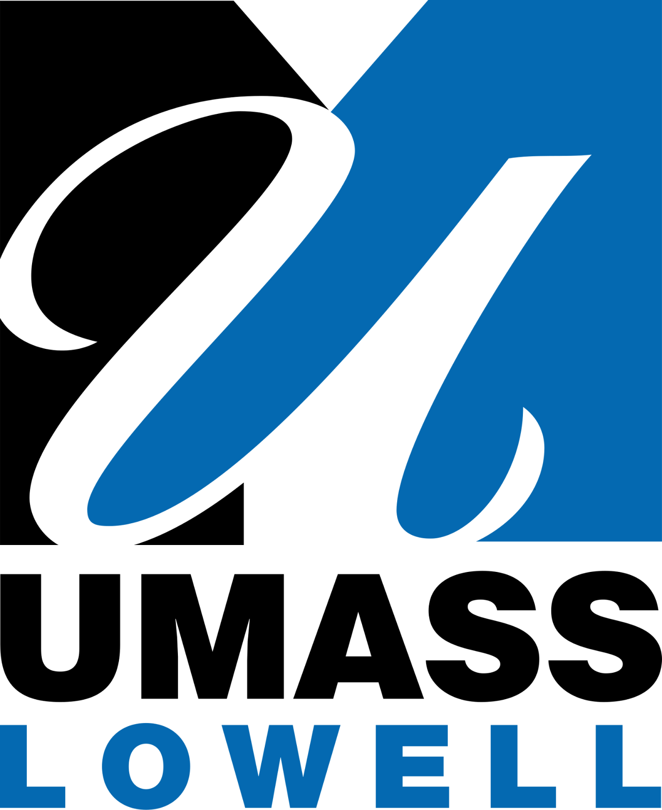

Human-to-Robot Handovers is one of the competition tracks within the 11th Robotic Grasping and Manipulation Competition (RGMC) that will be held during the 2026 IEEE/RAS International Conference on Robotics and Automation (ICRA) in Vienna, Austria.

The real-time estimation through vision perception of the physical properties of objects manipulated by humans is important to inform the control of robots and perform accurate and safe grasps of objects handed over by humans. However, estimating the physical properties of previously unseen objects using only inexpensive cameras is challenging due to illumination variations, transparencies, reflective surfaces, and occlusions caused both by the human and the robot.
Our dynamic human-to-robot handovers track is based on an affordable experimental setup that does not use a motion capture system, markers, or prior knowledge of specific object models. The track focuses on food containers and drinking glasses that vary in shape and size, and may be empty or filled with an unknown amount of unknown content.
Goal: Assess the generalisation capabilities of the robotic control when handing over previously unseen objects filled (or not) with unknown content, hence with a different and unknown mass and stiffness. No object properties are initially known to the robot (or the team) that must infer these properties on-the-fly, during the execution of the dynamic handover, through perception of the scene.
- Competition dates: 2-4 June 2026 (schedule to be confirmed)
- Award ceremony (announcement of the winners): 4 June 2026, 16:45 - 18:15 (Hall C5)
- Deadline for submitting demo video for RGMC YouTube channel: 30 June 2026
- Sunday 31 May - Monday 1 June: set-up and trials (dry-runs)
- Tuesday 2 June: setup and trials (only half of the area is available for handover track)
- Wednesday 3 June, 9am-6pm: setup and trials
- Thursday 4 June, 9am-12: handover competition, demos
The event will be held in the Exhibition Hall B - COMP1 - Robotic Grasping and Manipulation Competition (RGMC).
Teams accepted to the Human-to-Robot Handover track. Select a team to see the details. Team leader highlighted in bold.
The track involved a qualification phase in which teams performed the handover configurations of the CORSMAL Benchmark protocol remotely in their laboratory. Qualified teams for the live competition in Vienna are (list in alphabetical order):
- 3D Vision & Robotics Lab (UR5 request)
- AIRLab (UR5 request)
- Broken Arm (own robot)
- LARICS Grippers (own robot)
- Robot Booster (own robot)
- Shakey's Legacy (Franka request, or own robot)
- SIRSIIT (Franka request)
- Youth2Real (own robot)
- IITGN Robotics Lab (Franka request) - Withdrawn
Alessio Xompero, Queen Mary University of London (UK)
Changjae Oh, Queen Mary University of London (UK)
Andrea Cavallaro, École polytechnique fédérale de Lausanne (Switzerland)
Yuekun Wu, Queen Mary University of London (UK)
If you have any questions or enquiries related to the competition track, please contact Dr. Changjae Oh.
If you have any general questions or other enquiries related to the Robotic Grasping and Manipulation Competition, please visit the RGMC webpage.
We thank our sponsors for the support by providing UR5 and Franka FR3 robots on the competition site for teams having difficulty bringing their own, providing table mounts for the robots and objects for the competition, and sponsoring the prizes for the winning teams.




